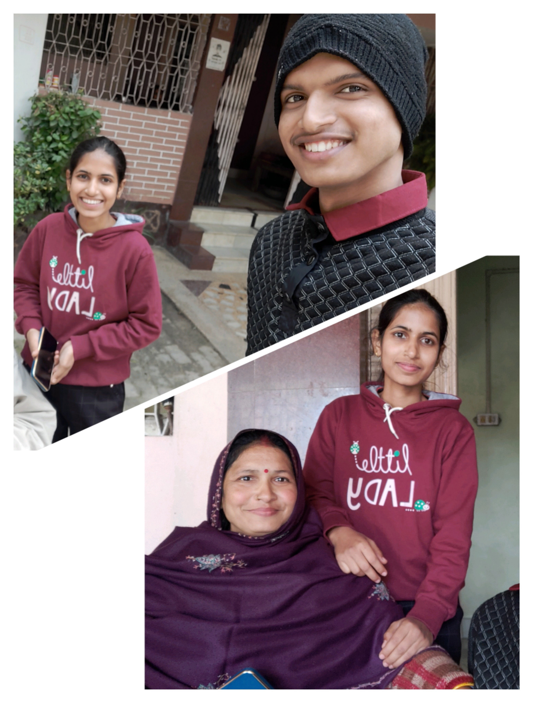
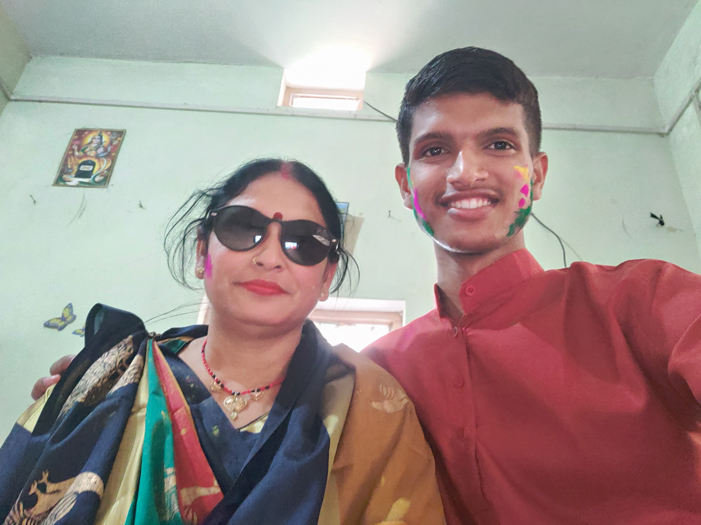
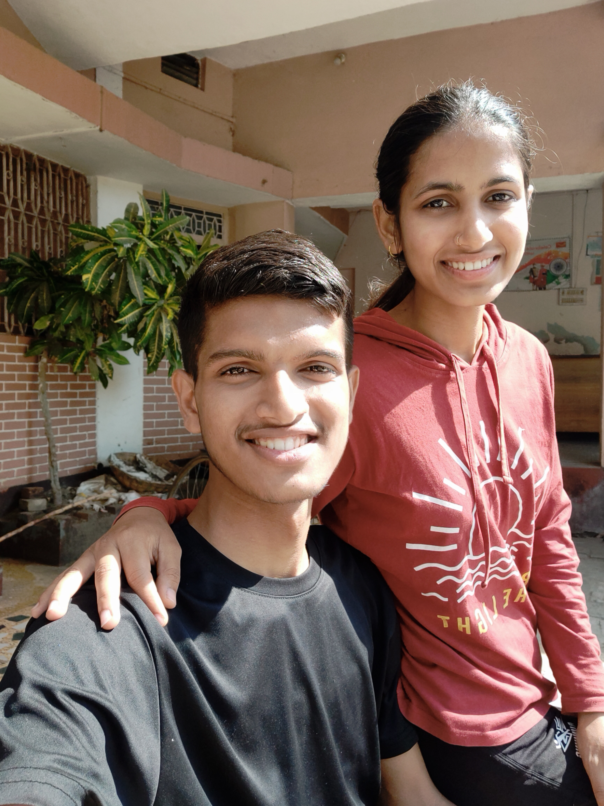
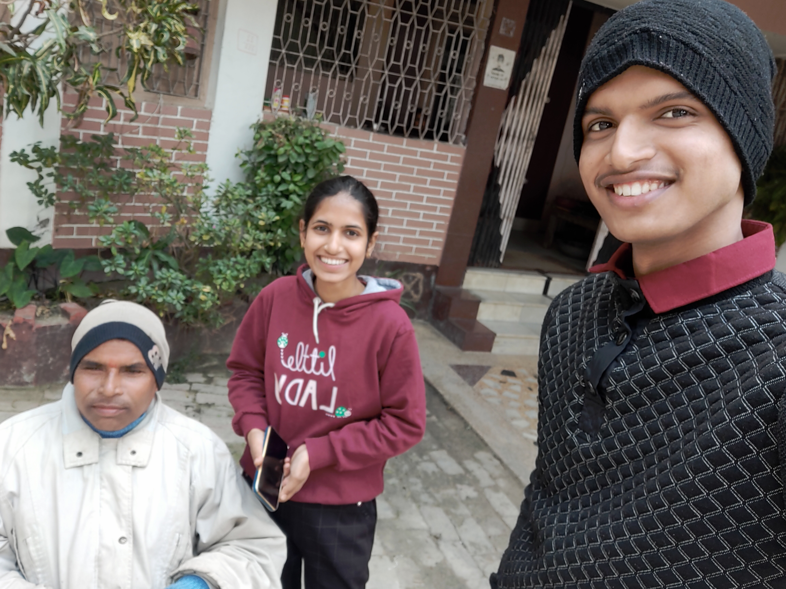
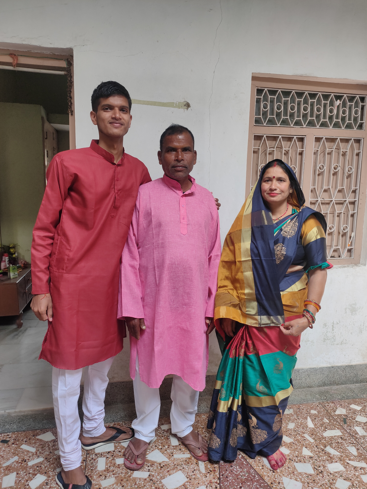
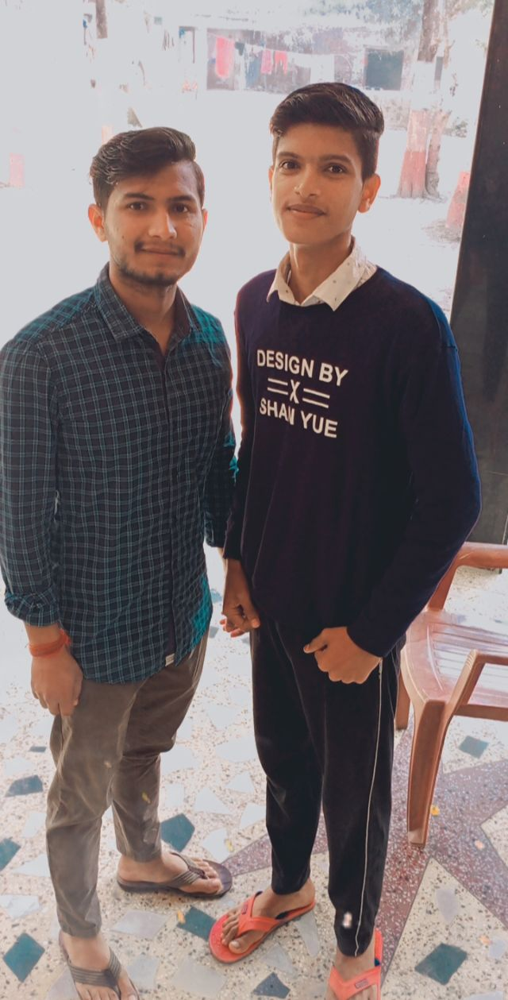
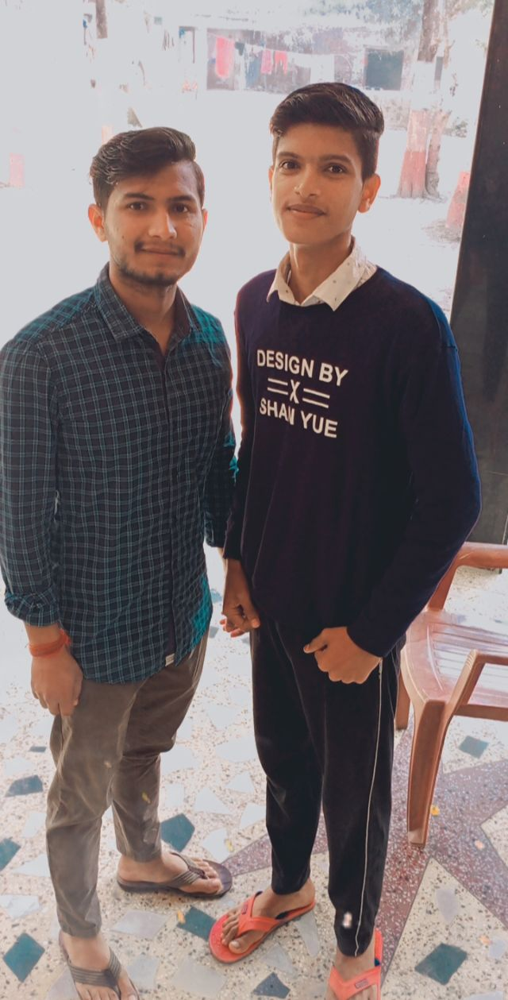
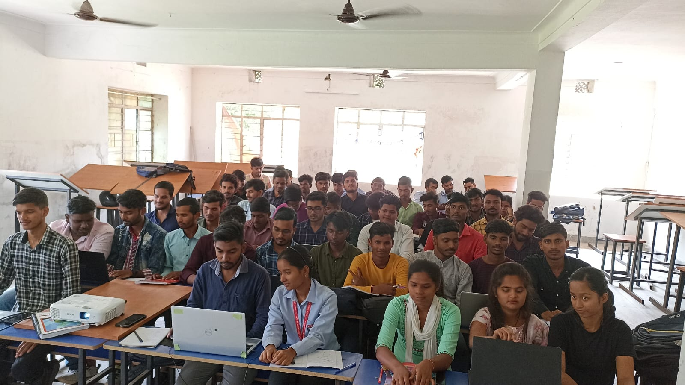

introoo
I born in small village of Gopalganj district of BIHAR, that is BAKHARI.on {25/07/2005}I am from middle class family where my father is BPM in postoffice of SASAMUSA. And my mother is housewife.we have family of six. Two brothers Two sisters and our parents..
    
 

For our studies we went to Thawe.on 3 Nov,2011 that 20 km from our village. We shifted there and took a flat at rent.All of us got admission in prestigious DAV PUBLIC SCHOOL. I got admission in LKG. by just telling them abcd till z. that,s funny
at that time i am 3-4 years old. As like every child my schooling was going good and fantastic. not even a single tension or nothing..
After lockdown opens
After chath i again went to patna for my studies but i am totally unaware of what to study for boards or any competitive exams.. Without studying for a single day i gave my NDA 1st attempt and that day i knew i don't know anythying and successfully wasted my first nda attempt.. i am studying in Patna bazar samiti ,so breakeable studies ...Again some how after studying for 1-2 months i got 70.4 % in 12 th boards.. i never wanted to give JEE exam that is like every 12 science stream student is going for it.. i have a dream of Joing ARMED FORCES AS OFFICER.After 12th i decided to give my 100% to my next NDA attempt that was in just after 1month of boards. I sutudied but that time to i am not able to crack the cutt of exam ..
Nda attempts
AFTER MY NDA 2ND ATTEMPT I AM LOST AND OVERTHINKING ABOUT MY LIFE CAREER BUT I HAVE ALWAYS FAITH AND BELIEVE IN ME THAT ONE DAY I AM ABLE TO COMPLETE MY DREMAS ...I don't prepare for jee or any exams except NDA. i decided to go for offline coaching and give my 110% to my next attempt without thinking about results..NOW ITS ALL ABOUT MEERUT..{summary}
I joined a coaching TUTORS ACADEMY, that is loacted in MEERUT for my next attempt of nda. For 4 months i forgot everything and judt study hard giving all my to this attempt .. approximate 15-16 hours a day i studied during my prepration.. i literally worked hard gave my 100%..i made freinds that they really supported through my whole prepration days
{HERE U CAN CHECK MY MEERUT DAYS..}
 MEERUT(click here)
MEERUT(click here)
After giving everything.. That day comes.. the exam day 3rd sept 2023. i gave the exam i have confidence that time that i cleared the paper. after checking my paper or u can say after anylasing i realised i am on the border of cutt off .. i just hoping that pls god i ant my name in that list of written result. bcoz my parents my rlatives everyone has faith in me that i am going to clear that exam But after results again i couldn't clear the exam .. but this time i am not sad not hopeless bcoz i know that i given my 100%. But this exams requires more . But one thing i know is now i am capable of doing anything by hardwork and nothing is going to stop me to complete my dreams.. THE ONLY THIMG IS It's ME VS ME . i know that may be i failed this time but i learned various things i can't tell in words.. there is lot of EXPREINCES from that attempt here is an over view of my all nda attemps.....
| ALL ATTEMPTS OF NDA | |
|---|---|
| ATTEMPTED MATHS QUESTION | ATTEMPTED GAT QUESTIONS |
| 1ST- 24maths | 50+ GAT |
| 2nd-28 maths | 65+ GAT |
| 3rd- 50 maths | 85+ GAT |
 NOW, I AM PURSUING B.tech IN CIVIL FROM RKDF UNIVERSITY OF RANCHI. ....hope that my dreams comes trueee..